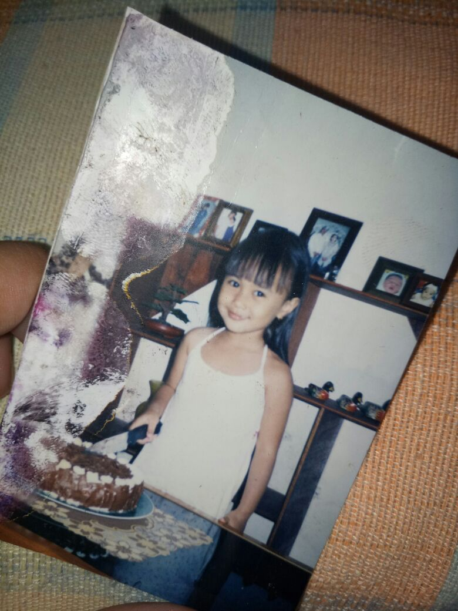
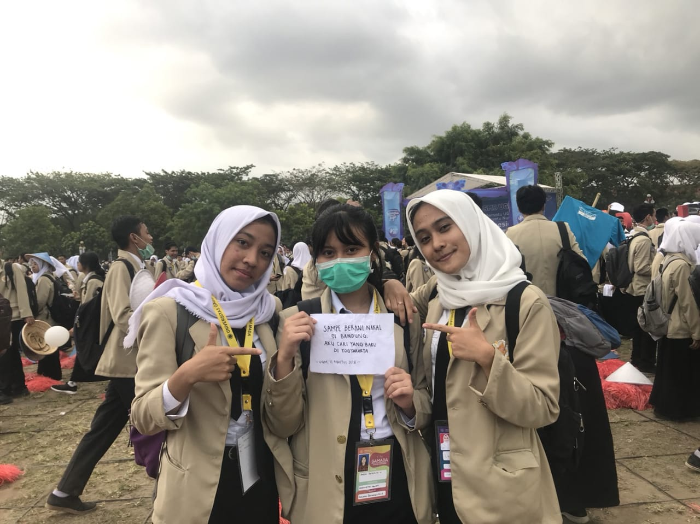
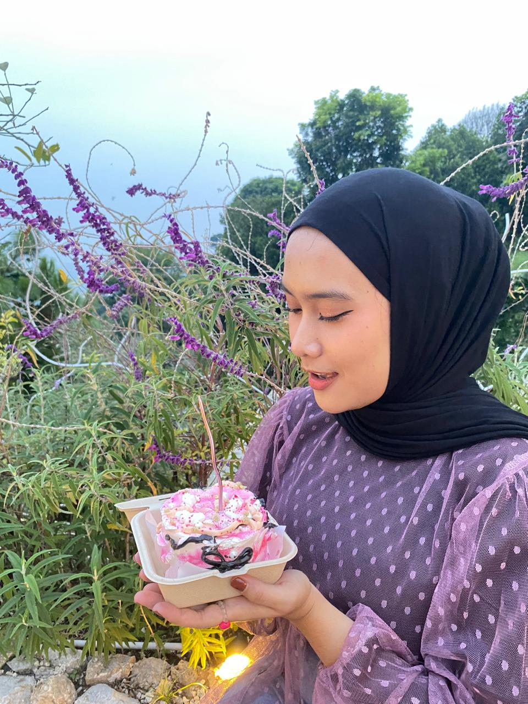
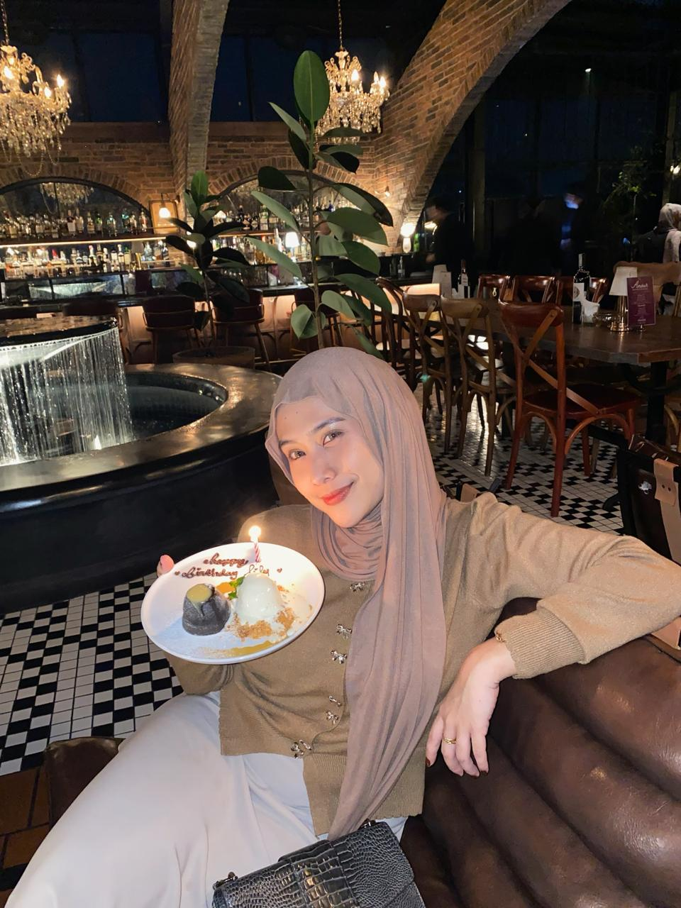
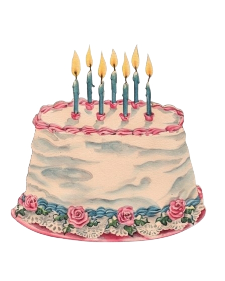

Selamat Ulang Tahun, Lailyta ✨
⏳
Lembaran Memori

"Senyum polos yang begitu tulus dari seorang anak tanpa beban, dengan poni menyentuh dahi, membawa serta kehangatan dan secercah harapan yang tak perlu kata-kata."

"Senyum tipis sisa energi dari masa orientasi. Namun di baliknya tersimpan kebanggaan yang membara atas diterimanya ia di Kampus Biru, yang kelak akan membawanya melangkah jauh ke depan."

"Simbol dari perjuangan, pengorbanan, gagasan, dan keilmuan. Tiga tahun telah menempa seorang gadis menjadi wanita berilmu dan berpendidikan. Kebanggaan selalu menyertai setiap langkahmu. Selamat!"

"Mulai menginjakkan kaki di kehidupan yang sesungguhnya menjadi wanita dewasa yang penuh harapan. Ia adalah nahkoda bagi kapalnya sendiri. Semangat!"

"Waktu memang tak pernah menunggu. Foto ini diabadikan setahun lalu dalam kehangatan dan kebersamaan yang terasa begitu nyata. Dan kini, gadis kecil berponi itu telah tumbuh menjadi wanita dewasa secantik ini!"
"Aku tak pernah tahu sampai kapan foto ini akan bertahan di galeri-ku. Tapi setidaknya, sebagian dari momen itu kini ku abadikan di sini. Semoga ia bertahan lebih lama, semoga ia tetap abadi."
Bara yang Abadi
"Api yang dulu hangat, masih kujaga nyalanya. Tak berubah sedikitpun. Bahkan, sampai detik ini kamu membaca tulisan ini, suhunya masih tetap sama. Belum pernah sekalipun terlintas niatku untuk memadamkannya.
Aku tahu, bermain api itu berisiko. Bahkan bara sekecil apapun dapat meninggalkan bekas luka. Tapi biarkanlah. Biarkanlah aku terbakar. Biarkanlah luka itu memelukku, menjadi pengingat bahwa aku pernah memilih untuk merasakan sesuatu yang nyata.
Bukankah pria dengan bekas luka bakar itu terlihat keren? Seperti Zuko dengan luka di matanya. Itu bukanlah simbol kelemahan, melainkan simbol dari apa yang pernah ia pertahankan mati-matian."
Tiup Lilin
(Tiup untuk memadamkan api)
